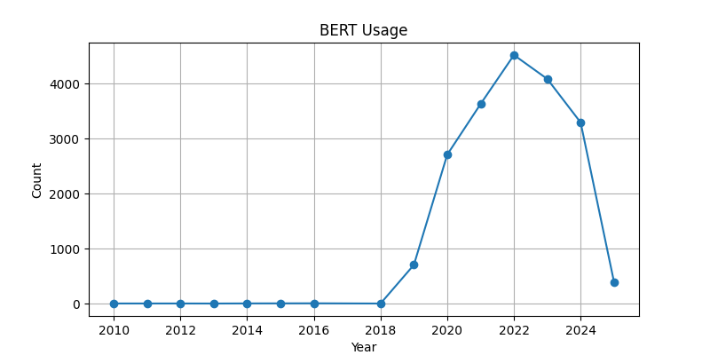

ACLBot Chat Transcript
BERT Usage
User: Hello
Bot: Hello! How can I assist you today?

User: Can you show me 5 papers from ACL 2023?
Bot: It seems that I couldn't find any papers for ACL 2023 at the moment. Would you like to search for a different event or perhaps look for specific topics or authors?
User: Please show me 5 papers from EMNLP 2023.
Bot: It seems that I'm unable to find the event ID for EMNLP 2023 at the moment. Would you like to search for papers from a different event or publication?
User: What are the 10 most commonly used methods?
Bot: The 10 most commonly used methods in the ACL Anthology are:
1. Expectation-Maximization (1158 uses)
2. Logistic Regression (1143 uses)
3. Data Augmentation (1077 uses)
4. Fine-tuning (1013 uses)
5. Contrastive Learning (839 uses)
6. Knowledge Distillation (781 uses)
7. Reinforcement Learning (669 uses)
8. Multi-task Learning (665 uses)
9. Beam Search (641 uses)
10. TF-IDF (628 uses)
User: Please output this as csv
Bot: Certainly! Here is the information in CSV format:
```
Method Name, Usage Count
Expectation-Maximization, 1158
Logistic Regression, 1143
Data Augmentation, 1077
Fine-tuning, 1013
Contrastive Learning, 839
Knowledge Distillation, 781
Reinforcement Learning, 669
Multi-task Learning, 665
Beam Search, 641
TF-IDF, 628
```
User: What are the top 10 datasets for which there are results?
Bot: Here are the top 10 datasets for which there are results, formatted as CSV:
```
Dataset Name, Result Count
GLUE, 1185
SST-2, 1055
Twitter, 982
English, 843
Reddit, 815
CNN/DailyMail, 810
Yelp, 765
IMDB, 763
MNLI, 687
Natural Questions, 610
```
User: What kind of metrics are reported for GLUE?
Bot: Here are some of the metrics that are reported for the dataset GLUE:
1. Accuracy
2. F1-score
3. Pearson Correlation
4. Matthew's Correlation Coefficient
5. Spearman Correlation
6. BLEU
7. ROUGE (including variants like ROUGE-1, ROUGE-2, ROUGE-L)
8. MCC (Matthews Correlation Coefficient)
9. AUC (Area Under Curve)
10. Perplexity
(Note: The full list is extensive and includes many variants and specific metrics for particular tasks, as seen in the detailed query result.)
User: What is the best F1-Score reported on GLUE
Bot: The best F1-score reported on the GLUE dataset is 3.41.
User: What is the best accuracy reported on GLUE?
Bot: The best accuracy reported on the GLUE dataset is 18.1.
User: What is the best accuracy reported on GLUE that is smaller than 1?
Bot: The best accuracy reported on the GLUE dataset that is smaller than 1 is 0.999.
Click here to provide feedback